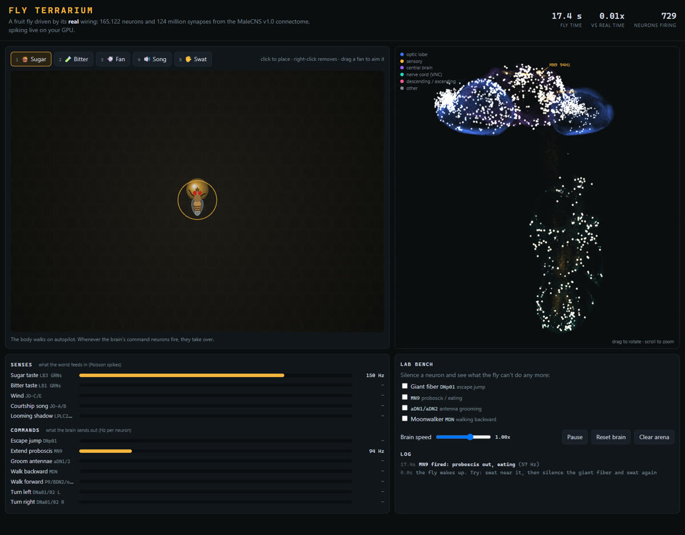

Fly Terrarium
A fruit fly driven by the real wiring of a male fly’s whole nervous system: 165,122 neurons and 23.8 million connections, simulated in real time. Drop sugar, aim a fan, and watch its brain light up.
Connectome data: MaleCNS v1.0 by HHMI Janelia FlyEM and Google, CC BY 4.0.